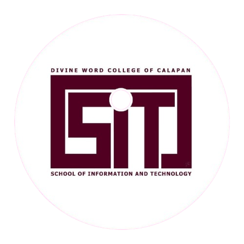

Innovate. Learn.
Succeed.
Where and you can choose to specialize in or more as you go on and start your career. A wide range of skills promises a wide range of opportunities.


Where and you can choose to specialize in or more as you go on and start your career. A wide range of skills promises a wide range of opportunities.

School of Information and Technology includes the study of the utilization of both hardware and software technologies involving planning, installing, customizing, operating, managing and administering, and maintaining information technology infrastructure that provides computing solutions to address the needs of an organization. The program prepares graduates to address various user needs involving the selection, development, application, integration and management of computing technologies within an organization.
Introduction to IT, Programming (C++, Java, Python), Data Structures, Databases, Web Development, Networking, Systems, Software Engineering, Operating Systems, HCI, Mobile Development, and Security.
Students may select electives from options including Artificial Intelligence, Cloud Computing, Cybersecurity, the Internet of Things (IoT), Game Development, and Data Analytics.
the program culminates in a Capstone Project and an On-the-Job Training (OJT) or Internship, providing practical experience and preparing graduates for successful careers in the technology field.